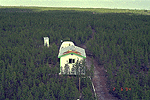
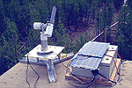
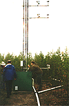
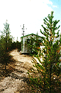
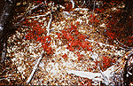

This site was located in a large area of young jack pines, all only about 2 meters high. This is the result of a fire in the area around 1984 (approx.). Jack Pine cones are sealed shut by sap, and it is only the intense heat of fire that boils the sap and causes the cones to pop open, thus releasing the seeds onto the newly burned (and enriched) soil. View an aerial photo-map of the NSA-YJP site.
 Location of the NSA within Canada. |
 Location of the Young Jack Pine site within the NSA. |
 Map of the Northern Study Area Young Jack Pine site. | |
| NSA Young Jack Pine Flux Tower also called NSA-YJP-FLXTR (click here for detailed info) |
||
| Latitude: 55.89575 | UTM Easting: 544583.9 | BOREAS X: 789.845 |
| Longitude: -98.28706 | UTM Northing: 6194706.9 | BOREAS Y: 617.424 |
| Elevation (ASL): 249.29 m | UTM Zone: 14 | |
|  The hut, tent, and dirt road from the flux tower |  The sun photometer on top of the hut |
|  The bottom of the YJP flux tower |  The hut with the flux tower behind it |
|  The ground cover at the YJP site | |
Related Pages:
 BOREAS Home
BOREAS Home
 Study Region Overview
Study Region Overview
 Northern Study Area (NSA)
Northern Study Area (NSA)
 NSA Young Jack Pine Site (NSA-YJP)
NSA Young Jack Pine Site (NSA-YJP)
 SSA Young Jack Pine Site (SSA-YJP)
SSA Young Jack Pine Site (SSA-YJP)
Revison Date: January 25, 1999
{kind=link}
{kind=link}
{kind=link}
{kind=link}
{kind=link}
{kind=link}